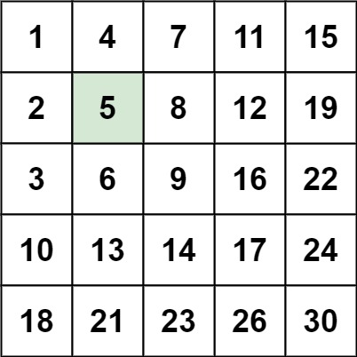
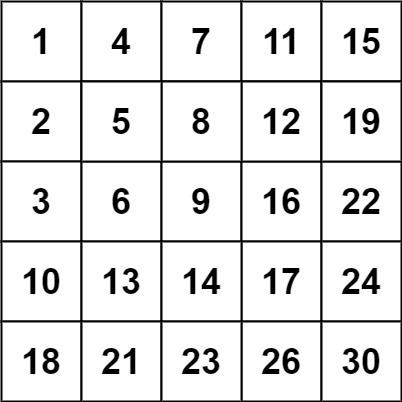

240. 搜索二维矩阵 II
题目与约束
编写一个高效的算法来搜索 m x n 矩阵 matrix 中的一个目标值 target 。该矩阵具有以下特性：
- 每行的元素从左到右升序排列。
- 每列的元素从上到下升序排列。
示例 1：

输入：matrix = [[1,4,7,11,15],[2,5,8,12,19],[3,6,9,16,22],[10,13,14,17,24],[18,21,23,26,30]], target = 5
输出：true
示例 2：

输入：matrix = [[1,4,7,11,15],[2,5,8,12,19],[3,6,9,16,22],[10,13,14,17,24],[18,21,23,26,30]], target = 20
输出：false
提示：
m == matrix.lengthn == matrix[i].length1 <= n, m <= 300-109 <= matrix[i][j] <= 109- 每行的所有元素从左到右升序排列
- 每列的所有元素从上到下升序排列
-109 <= target <= 109
核心不变量
每次比较都能排除一整行或一整列。
完整推导
思路推导
-
直觉与痛点（二分查找的困境）：
既然行和列都有序，很多人第一反应是对每一行做二分查找，时间复杂度是 O(M log N)；或者尝试沿着对角线做二分，代码极其复杂且边界难理清。能不能更快？
-
破局思路（寻找绝对的分界点）：
我们把这个矩阵想象成一棵二叉搜索树（BST）。
-
如果从左上角出发：往右变大，往下也变大。一旦目标值大于当前值，你该往右还是往下？迷茫了，无法抉择。（右下角同理，往左往上都变小，无法抉择）。
-
如果从右上角出发：神奇的事情发生了！
-
往左走，元素变小。
-
往下走，元素变大。
这简直就是一个完美的二叉搜索树节点啊！（左子树小，右子树大）。
-
-
逻辑推演（站在右上角俯视全局）：
设当前位置为
(row, col)，初始站在右上角row = 0, col = n - 1。比较
matrix[row][col]和target：- 如果等于
target：恭喜，直接找到，返回true。 - 如果大于
target：说明当前数字太大了。因为这一列下方的数字只会更大，所以当前列没救了（全部被淘汰），果断向左走：col--。 - 如果小于
target：说明当前数字太小了。因为这一行左边的数字只会更小，所以当前行没救了（全部被淘汰），果断向下走：row++。
Java 实现
C++ 实现
实现来源：经典解法实现
- 从右上角出发（元素同时是行最大、列最小）
- 当前值 > target → 整列排除，左移
- 当前值 < target → 整行排除，下移
- 越界仍未命中 → false
class Solution { public: bool searchMatrix(vector<vector<int>>& matrix, int target) { int r = 0, c = matrix[0].size() - 1; while (r < matrix.size() && c >= 0) { if (matrix[r][c] == target) return true; matrix[r][c] > target ? c-- : r++; // 大了删列，小了删行 } return false; } };Python 实现
实现来源：经典解法实现
- 从右上角出发（元素同时是行最大、列最小）
- 当前值 > target → 整列排除，左移
- 当前值 < target → 整行排除，下移
- 越界仍未命中 → false
class Solution: def searchMatrix(self, matrix: List[List[int]], target: int) -> bool: r, c = 0, len(matrix[0]) - 1 while r < len(matrix) and c >= 0: if matrix[r][c] == target: return True if matrix[r][c] > target: c -= 1 # 大了删列 else: r += 1 # 小了删行 return FalseGo 实现
实现来源：经典解法实现
- 从右上角出发（元素同时是行最大、列最小）
- 当前值 > target → 整列排除，左移
- 当前值 < target → 整行排除，下移
- 越界仍未命中 → false
func searchMatrix(matrix [][]int, target int) bool { r, c := 0, len(matrix[0])-1 for r < len(matrix) && c >= 0 { if matrix[r][c] == target { return true } if matrix[r][c] > target { c-- } else { r++ } } return false }C 实现
实现来源：经典解法实现
- 从右上角出发（元素同时是行最大、列最小）
- 当前值 > target → 整列排除，左移
- 当前值 < target → 整行排除，下移
- 越界仍未命中 → false
bool searchMatrix(int** matrix, int matrixSize, int* matrixColSize, int target) { int r = 0, c = matrixColSize[0] - 1; while (r < matrixSize && c >= 0) { if (matrix[r][c] == target) return true; if (matrix[r][c] > target) c--; else r++; } return false; } - 如果等于
class Solution {
public boolean searchMatrix(int[][] matrix, int target) {
// 应对极端情况
if (matrix == null || matrix.length == 0 || matrix[0].length == 0) {
return false;
}
int rows = matrix.length;
int cols = matrix[0].length;
// 初始位置：站在右上角
int r = 0;
int c = cols - 1;
// 只要没有走出矩阵的左下角边界，就继续搜索
while (r < rows && c >= 0) {
if (matrix[r][c] == target) {
return true; // 找到了！
} else if (matrix[r][c] > target) {
c--; // 当前数字太大，抛弃这一列，向左走
} else {
r++; // 当前数字太小，抛弃这一行，向下走
}
}
// 走出边界了都没找到，说明目标值不存在
return false;
}
}
复杂度
- 时间复杂度：O(M + N)。每一次比较，我们要么抛弃一行（
row++），要么抛弃一列（col--）。最多抛弃 M 行和 N 列，所以搜索的步数最多为 M + N 步。这比二分查找的 O(M log N) 还要快得多！ - 空间复杂度：O(1)。只使用了两个指针变量
r和c。
- 面试官发难：“为什么选右上角？左下角可以吗？”
-
满分回答：完全可以！ 站在左下角
(M-1, 0)时：-
往上走，元素变小。
-
往右走，元素变大。
依然满足“二选一”的单调性。只要不选左上角和右下角这两个“死胡同”就行。选右上角还是左下角，本质上是对称的。
-
- 相关进阶题：
- 如果题目变成：“每行有序，且每一行的第一个整数大于前一行的最后一个整数”（LeetCode 74: 搜索二维矩阵 I）。
- 那题更简单，整个矩阵其实可以直接拉平看作一个严格递增的一维数组，直接使用纯正的全局一维二分查找，时间复杂度是 O(log(M × N))。注意区分这两道题的区别！